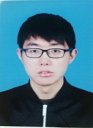

Zaiwang Gu
2019-12 ~ now
Senior Engineer
UBTech Robotics,
Shenzhen China.
|

|
Recent News and Awards:
- 2021-01: I have been promoted from engineer to "senior engineer".
- 2020-12: The "Outstanding Contribution Award" in Ubtech Research!
- 2020-07: The CE-Net becomes "ESI Highly Cited Paper", "ESI Hot Paper".
- 2020-06: One papers ("anomaly detection") accepted by ECCV 2020.
- 2019-07: MICS 2019 "Best Poster Award" !
[Link]
- 2018-07: ICCCV 2018 "Best Presentation Award" !
Brief Bio:
I have joined the UBTech Robotics Research, as a senior engineer. I joined the southern university of science and technology
(SUSTC) from 2019/07 to 2019/12, as a junior researcher. I received a Master's degree in Mechanical
manufacturing and automation from Shanghai University, China, in 2019. My research interests include object
detection and medical image analysis.
Research Interests:
-
Object Detection: object detection, image segmentation.
-
Medical Image Analysis: medical
images segmentation.
- "CE-Net: Context Encoder Network for 2D Medical Image Segmentation" [Link]
Activities:
- Journal Reviewer:
- IEEE Transactions on Medical Imaging (TMI).
- IEEE Transactions on Biomedical Engineering (TBME) .
- IEEE Transactions on Neural Networks and Learning Systems (TNNLS) .
- IEEE Journal of Biomedical and Health Informatics (JBHI) .
- Conference Reviewer:
-
MICCAI (2021, 2020, 2019)
Selected Publications:
2020:
-
Kang Zhou, Yuting Xiao, Jianlong Yang, Jun Cheng, Wen liu, Weixin Luo, Zaiwang Gu, Jiang Liu
and Shenghua Gao,
"Encoding Structure-Texture Relation with P-Net for Anomaly Detection in Retinal Images ",
ECCV 2020,
[arXiv]
2019:
-
Zaiwang Gu, Jun Cheng, Huazhu F, Kang Zhou, Huaying Hao, Yitian Zhao, Tianyang Zhang,
Shenghua Gao, and Jiang Liu,
"CE-Net: Context Encoder Network for 2D Medical Image Segmentation",
IEEE TMI, 2019.
[arXiv]
[Code]
"ESI Highly Cited Paper"
-
Tianyang Zhang, Jun Cheng, Huazhu Fu, Zaiwang Gu, Yitian Xiao, Kang Zhou, Shenghua Gao, Rui
Zheng, Jiang Liu
"Noise adaptation generative adversarial network for medical image analysis",
IEEE TMI, 2019.
[Paper]
-
Lei Mou, Li Chen, Jun Cheng, Zaiwang Gu, Yitian Zhao, Jiang Liu,
"Dense Dilated Network with Probability Regularized Walk for Vessel Detection",
IEEE TMI, 2019.
[Paper]
-
Yuming Jiang, Lixin Duan, Jun Cheng, Zaiwang Gu, Hu Xia, Huazhu Fu, Changsheng Li, Jiang Liu
"JointRCNN: A Region-based Convolutional Neural Network for Optic Disc and Cup Segmentation",
in IEEE TBME, 2019.
[Paper]
-
Lei Mou, Yitian Zhao, Li Chen, Jun Cheng, Zaiwang Gu, Huaying Hao, Hong Qi, Yalin Zheng,
Alejandro Frangi, Jiang Liu,
"CS-Net: Channel and Spatial Attention Network for Curvilinear Structure Segmentation",
in MICCAI, 2019.
[Paper]
-
Tianyang Zhang, Huazhu Fu, Yitian Zhao, Jun Cheng, Mengjie Guo, Zaiwang Gu, Bing Yang, Yuting
Xiao, Shenghua Gao, Jiang Liu
"SkrGAN: Sketching-rendering Unconditional Generative Adversarial Networks for Medical Image Synthesis",
in MICCAI, 2019.
[Paper]
2018:
-
Jun Cheng, Zhengguo Li, Zaiwang Gu, Huazhu Fu, DWK Wong, Jiang Liu,
"Structure-preserving guided retinal image filtering for optic disc analysis",
IEEE TMI, 2018.
[Paper]